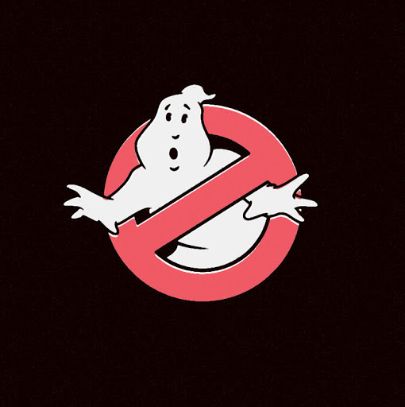
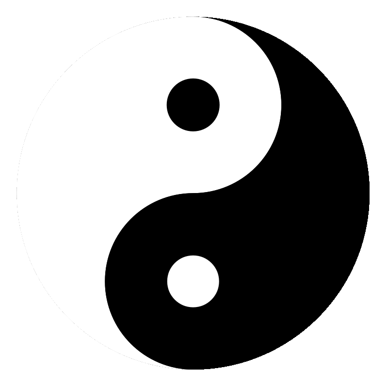

Whenever you have many different colors in a picture you should use a JPEG.A photograph hat features snow or an overcast sky might look like it has a large areas that are just white or gray, but the picture is usually made up of many different colors that are subtly different.
When a picture has an area that is filled with exactly he same color, it is known as flat color. Logos, illustrations, and diagrams often use flat colors. This applies to both PNG and GIF.
| Small | Medium | Large |
|---|---|---|
|  | ||
|  |